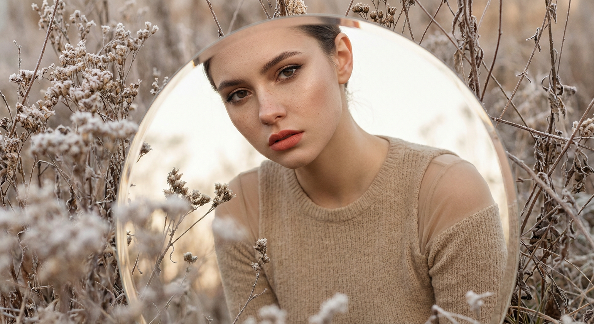
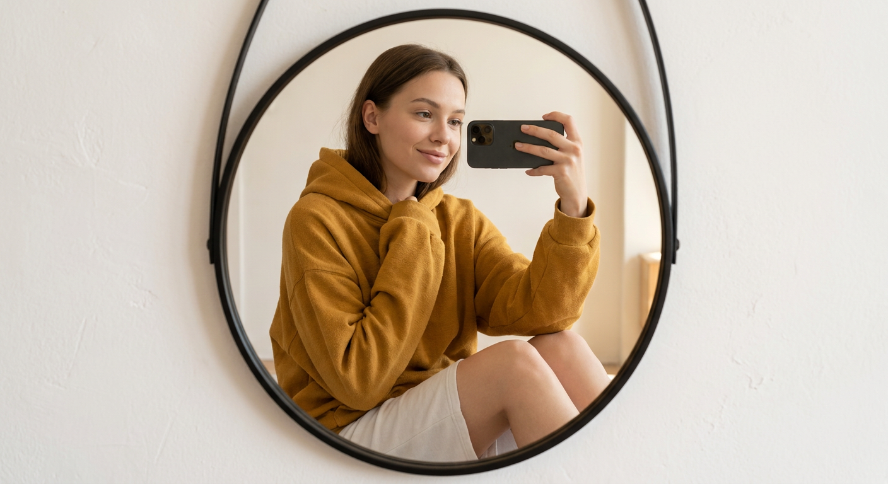
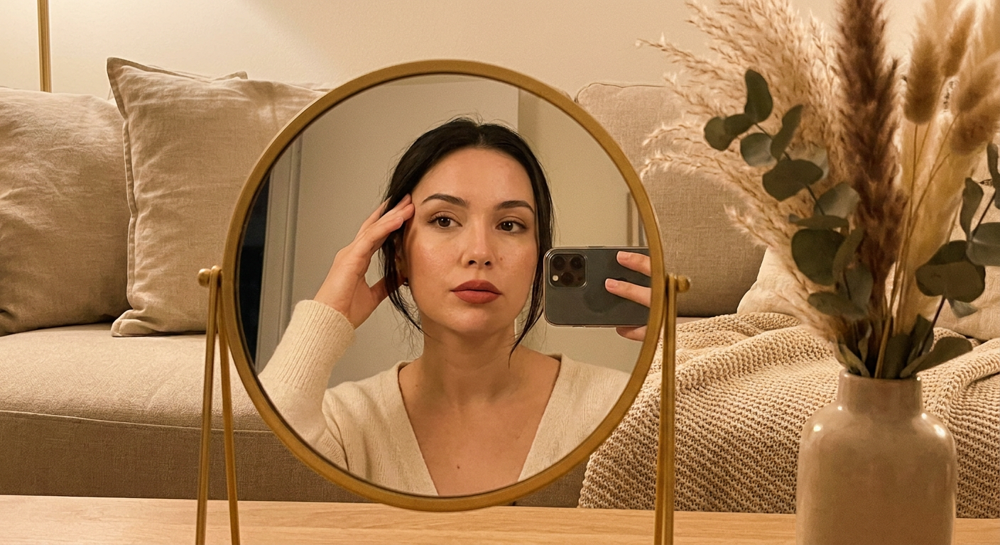
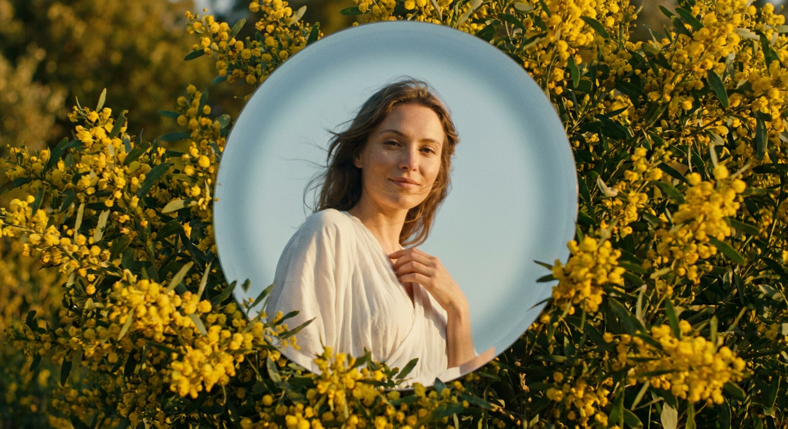
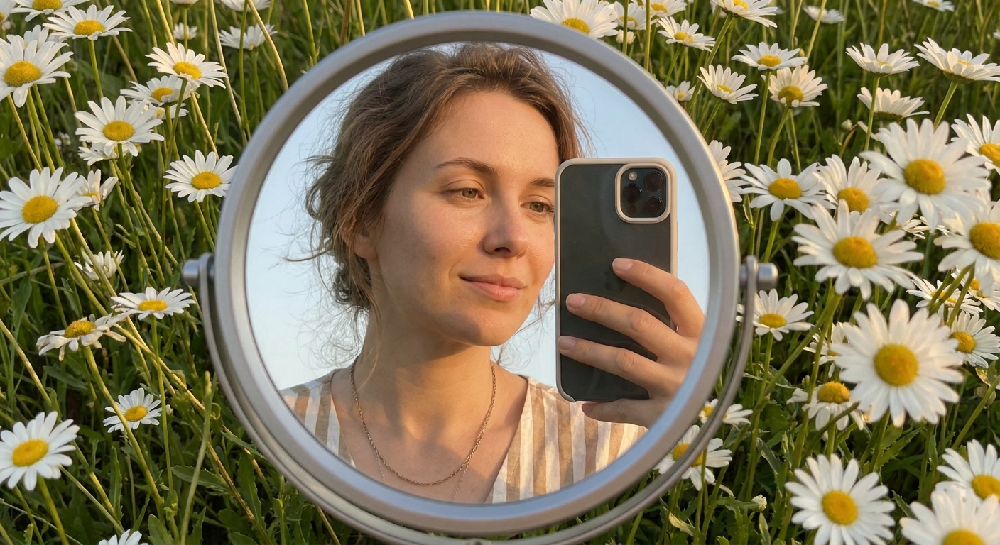
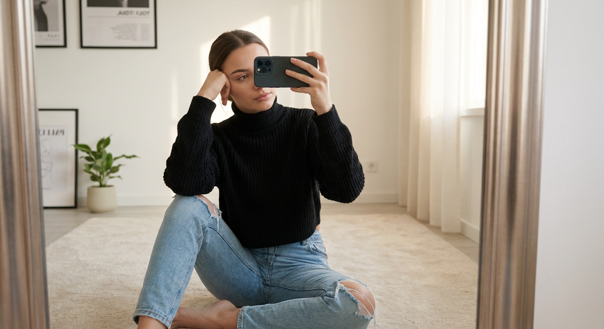
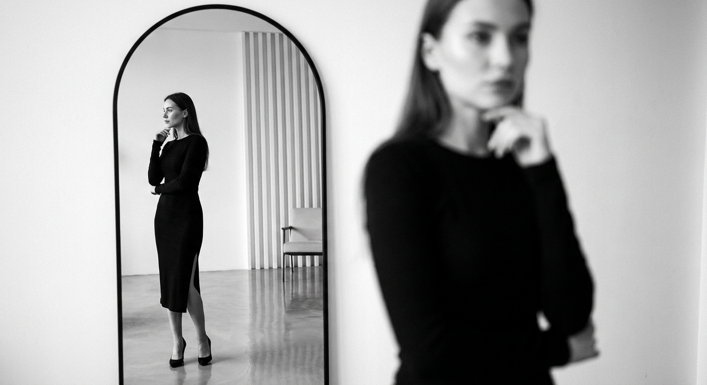
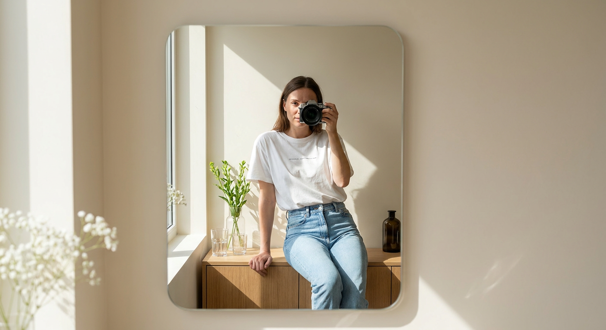
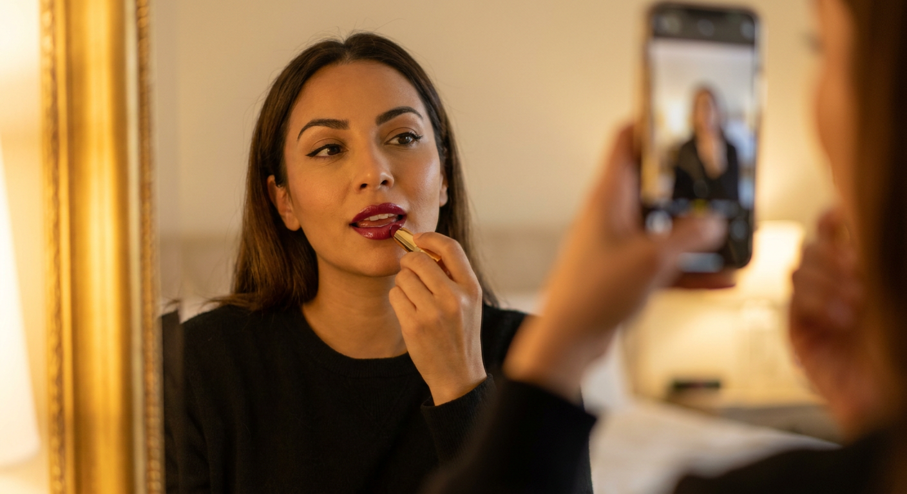
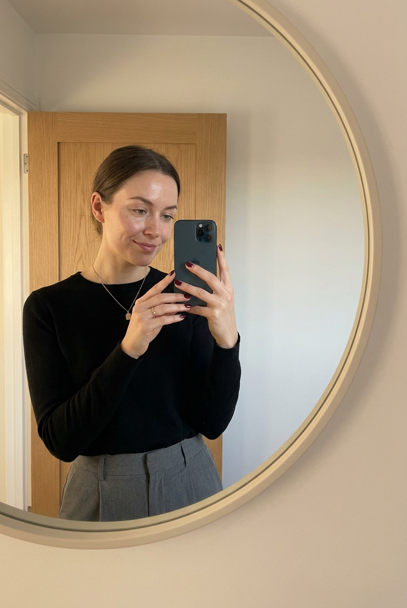

ИИ-фото в зеркале: 10 промптов для нейросети

Обычное селфи в зеркале быстро превращается в случайный кадр: телефон закрывает лицо, руки выглядят неестественно, а отражение спорит с перспективой. Генерация помогает заранее собрать сцену — от света и одежды до положения зеркала и глубины резкости.
В подборке — 10 промптов для разных настроений: уютное селфи дома, съёмка среди ромашек, кинематографичный портрет в природе, чёрно-белая fashion-сцена и аккуратные минималистичные кадры. Подставьте свой референс лица и при необходимости уточните формат изображения.
Как сгенерировать такое фото: пошагово
Нужен снимок анфас при ровном свете, лицо в кадре целиком, без тёмных очков и головных уборов. Разрешение от 1000 пикселей по короткой стороне. Чем чётче исходник, тем точнее модель повторит черты.
Выберите сценарий ниже и нажмите «Копировать» — текст уйдёт в буфер целиком, вместе с командой сохранения внешности. Эта команда стоит первой строкой и отвечает за то, чтобы на выходе было ваше лицо, а не случайное.
Кнопка «Сгенерировать» рядом с каждым промптом открывает модель в новой вкладке. Nano Banana Pro работает с референсом лица — в отличие от моделей, которые генерируют портрет с нуля и узнаваемость теряют.
Промпт — в поле ввода, портрет — через загрузку референса. Порядок значения не имеет, но без референса команда сохранения внешности работать не будет: модели нечего сохранять.
Для сторис и ленты берите 9:16, для превью и обложек — 4:3. Первый результат редко идеален: если поза или свет ушли не туда, поправьте соответствующую часть промпта и запустите заново. Обычно хватает двух-трёх итераций.
10 промптов для генерации
1. Зеркало среди сухих веток
Строго сохранить внешность по загруженному референсу: черты лица, пропорции, мимику и текстуру кожи без изменений. Фотореалистичный сюрреалистичный портрет в эстетике cinematic fine art. В центре композиции — крупное круглое выпуклое зеркало или отражающая вставка, установленная среди высохших трав и тонких ветвей с белёсым пудровым налётом, похожим на иней. Внутри круга крупно показана девушка, лицо в резком фокусе, взгляд прямо в объектив или чуть в сторону, настроение задумчивое и немного напряжённое. Макияж выразительный: тёмная стрелка, аккуратные брови, ровная кожа с мягким свечением, губы матовые или сатиновые, тёплый розово-оранжевый, нюдово-терракотовый оттенок. На девушке плотное боди или платье песочно-бежевого цвета без открытой наготы, хорошо заметна фактура ткани. Мягкий рассеянный свет, малая глубина резкости, кинематографичная цветокоррекция, вертикальный кадр, объектив 85 мм, f/1.8, высокая детализация.
2. Горчичное селфи дома

Строго сохранить внешность по загруженному референсу: черты лица, пропорции, мимику и текстуру кожи без изменений. Минималистичное фотореалистичное mirror selfie в светлом интерьере. На белой фактурной стене со штукатуркой или тонкой лепниной висит овальное зеркало в узкой чёрной раме. Оно занимает центр кадра, слегка выпуклое, но без заметных оптических искажений. Камера расположена напротив зеркала на уровне глаз, как при обычной съёмке на смартфон. В отражении девушка сидит или полусидит, показана от колен и выше, корпус немного развёрнут боком, на лице лёгкая естественная улыбка. Взгляд направлен на телефон. Дневной макияж: ровный тон, деликатная линия ресниц, нюдово-розовые губы. На девушке свободный жёлтый или горчичный свитшот-худи, крупная фактура ткани хорошо различима. Мягкий дневной свет из окна, спокойная бело-молочная палитра, реалистичное отражение, вертикальный формат, объектив 50 мм, f/2.8.
3. Тёплый портрет в круге

Строго сохранить внешность по загруженному референсу: черты лица, пропорции, мимику и текстуру кожи без изменений. Фотореалистичный портрет в формате mirror selfie, снятый в тёплом уютном интерьере. Главный объект — круглое зеркало с тонкой рамой золотистого оттенка, расположенное в центре композиции. В отражении девушка видна по грудь и плечи, лицо максимально резкое, взгляд направлен прямо на камеру или на собственное отражение. Одной рукой она приподнимает прядь волос и мягко касается пальцами виска или зоны над бровью; вторая рука может исчезать за границей кадра. Выражение спокойное, слегка задумчивое, губы сомкнуты. Макияж натуральный: ровная кожа, подчёркнутые брови, тонкая подводка, мягкие песочно-нюдовые тени, губы розово-терракотового оттенка с матовым или сатиновым финишем. Тёплый свет от настольной лампы, мягкие тени, уютный фон без визуального шума, вертикальный кадр, объектив 85 мм, f/2, высокая детализация кожи и волос.
4. Круглое зеркало среди цветов

Строго сохранить внешность по загруженному референсу: черты лица, пропорции, мимику и текстуру кожи без изменений. Кинематографичный фотореалистичный кадр природы: большая круглая зеркальная вставка расположена среди поля жёлтых цветов. Диск светло-голубого или серо-голубого оттенка напоминает стеклянное отражающее окно, по краю видны лёгкая тень и мягкая виньетка, золотой рамы нет. Внутри круга отражена девушка по пояс или почти в полный рост: видны голова, плечи и часть тела. Волосы слегка растрёпаны ветром, поза свободная, корпус немного наклонён в сторону. Лицо расслабленное, выражение мечтательное, допускается едва заметная полуулыбка, взгляд направлен к камере. Свет естественный, мягкий, с солнечными бликами на лепестках и лёгким движением травы. Реалистичная оптика зеркала, умеренная глубина резкости, приглушённая плёночная цветокоррекция, вертикальная композиция, объектив 50 мм, f/2.2, разрешение 4K.
5. Селфи в круге ромашек

Строго сохранить внешность по загруженному референсу: черты лица, пропорции, мимику и текстуру кожи без изменений. Фотореалистичное творческое селфи в зеркале, почти весь передний план занят белыми ромашками с жёлтыми серединками, густыми зелёными стеблями и лепестками. В центре находится круглое зеркало с матовым серебристо-стальным ободом, внутри которого отражается девушка. Она стоит в окружении цветов и фотографирует себя, держа в руке светлый смартфон — тёмный или молочный корпус, камера в левом верхнем углу, светлый чехол. Лицо повернуто к телефону и зеркалу, выражение спокойное, задумчивое или с мягкой улыбкой. Волосы немного растрёпаны. Макияж естественный, с чуть тёплым тоном кожи и нейтральными губами. Ромашки на переднем плане частично размыты, отдельные лепестки проходят перед краями зеркала. Летний рассеянный свет, натуральные зелёные и белые оттенки, малая глубина резкости, объектив 85 мм, f/1.8, вертикальный формат.
6. Селфи на светлом ковре

Строго сохранить внешность по загруженному референсу: черты лица, пропорции, мимику и текстуру кожи без изменений. Фотореалистичное mirror selfie в светлой современной комнате. Зеркало занимает правую часть изображения: видны его отражающая поверхность, край и рамка на переднем плане справа. Девушка сидит на полу на мягком светлом ковре и немного разворачивается к зеркалу. В обеих руках она держит смартфон в тёмном чехле, поднятый до уровня лица; телефон частично закрывает черты, взгляд направлен на экран или собственное отражение. Естественная кожа, натуральный макияж, аккуратные брови, губы нейтрального оттенка. На девушке чёрный укороченный вязаный топ или джемпер с высокой горловиной, похожей на водолазку, длинные рукава. Интерьер чистый и светлый, без лишних предметов, мягкий свет из окна, реалистичная геометрия отражения. Камера на уровне пола, вертикальный кадр, объектив 35 мм, f/2.8, мягкое размытие фона, высокая детализация фактуры ковра и вязки.
7. Чёрно-белое арочное зеркало

Строго сохранить внешность по загруженному референсу: черты лица, пропорции, мимику и текстуру кожи без изменений. Чёрно-белая fashion-фотография в стиле mirror selfie, крупный вертикальный кадр с большим арочным зеркалом. В левой части зеркала, в резком фокусе, женщина стоит на полу в полный рост, корпус развёрнут на три четверти, почти профиль, голова слегка повернута влево, взгляд направлен в сторону. На ней элегантный лаконичный образ, макияж нейтральный, без цветовых акцентов. В правой части кадра, ближе к объективу, появляется крупная частично размытая фигура той же женщины: лицо и плечи визуально растянуты перспективой зеркала, создавая ощущение движения, глубины и боке. Контрастная монохромная обработка, мягкий направленный свет, глубокие серые тени, выразительная фактура одежды и стены. Эффект малой глубины резкости, съёмка на объектив 50 мм, f/1.4, зерно аналоговой плёнки, тщательно выстроенная перспектива, разрешение 4K.
8. Минималистичная студия с цветами

Строго сохранить внешность по загруженному референсу: черты лица, пропорции, мимику и текстуру кожи без изменений. Фотореалистичное минималистичное селфи в зеркале в светлой студии или ванной комнате в стиле modern minimal. На бежево-молочной стене установлено прямоугольное зеркало с закруглёнными углами, оно занимает центральную часть кадра. Камера смотрит на зеркало прямо снаружи, а девушка видна в отражении. Слева на переднем плане частично проходят белые цветы на тонких стеблях, они слегка размыты. Девушка сидит на небольшой тумбе или подоконнике у зеркала, ноги согнуты, одно колено расположено ближе к переднему краю. В руках компактная камера или смартфон с крупным объективом, лицо может быть частично скрыто устройством. Свет мягкий, студийный, интерьер светлый и почти пустой, поверхности матовые. Спокойная поза, натуральный макияж, реалистичная кожа и отражение, вертикальный формат, объектив 35 мм, f/2.8, разрешение 4K.
9. Помада у золотой рамы

Строго сохранить внешность по загруженному референсу: черты лица, пропорции, мимику и текстуру кожи без изменений. Фотореалистичный крупный план девушки в зеркале в эстетике mirror selfie. Отражение занимает центр изображения, по одному из краёв проходит золотистая рама, а передний план мягко размыт для эффекта глубины резкости. Девушка смотрит на своё отражение, лицо расслабленное, брови слегка изогнуты. Макияж гламурный: ровный тон кожи, выразительные чёткие стрелки, тёплые нюдовые тени, густые ресницы, тщательно оформленные длинные брови. Сценический момент — она наносит помаду или блеск: губы слегка приоткрыты, у губ находится косметический стик в руке. Оттенок губ насыщенный тёплый красно-винный, бордовый или карамельно-красный, финиш глянцевый. Бьюти-стик имеет золотистый корпус. Тёплый направленный свет, мягкие блики на коже и металле, объектив 85 мм, f/1.8, вертикальный портрет, высокая детализация губ, ресниц и отражения.
10. Круглое зеркало в коридоре

Строго сохранить внешность по загруженному референсу: черты лица, пропорции, мимику и текстуру кожи без изменений. Фотореалистичное вертикальное селфи в зеркале в минималистичном коридоре или спокойной комнате. В центре висит большое круглое зеркало с тонким светло-бежевым или песочным обрамлением, установленное примерно на уровне пояса и выше; отражение заполняет почти весь круг. Девушка смотрит на смартфон или собственное отражение, выражение спокойное, на губах лёгкая полуулыбка. Макияж естественный: ровный тон, аккуратные брови, мягкие тени, подчёркнутые ресницы, нюдово-розовые губы. На ней чёрный слегка прилегающий свитер или джемпер с длинными рукавами. В нижней части отражения видна светло-серая или графитовая юбка либо брюки с высокой посадкой, заметны складки и фактура ткани. Нейтральный интерьер, мягкий рассеянный свет, чистые линии, реалистичная перспектива зеркала, камера на уровне груди, объектив 50 мм, f/2.8, вертикальный формат, разрешение 4K.
Что важно учесть в этом стиле
Зеркало должно быть описано как отдельный объект: укажите его форму, размер, раму и положение в кадре. Иначе нейросеть может превратить отражение в обычное окно или добавить второе лицо. Для выпуклого зеркала отдельно задайте лёгкое искажение, а для минималистичных сцен — отсутствие сильной деформации.
Уточняйте, где находится камера и что именно видно в отражении. Телефон может закрывать лицо, рука — попадать в кадр частично, а передний план — быть размытым. Такие детали помогают получить фотографический эффект, а не набор предметов перед зеркалом.
Идеи для вариаций
- Замените ромашки на сухоцветы, лаванду или ветви эвкалипта.
- Попросите свет от окна, вечерний неон или один жёсткий луч настольной лампы.
- Сделайте зеркало овальным, арочным, узким напольным или встроенным в стену.
- Добавьте эффект старой плёнки, лёгкий флэр или холодную редакционную цветокоррекцию.
- Поменяйте смартфон на компактную камеру, плёночный фотоаппарат или маленькое ручное зеркало.
- Для fashion-версии задайте жакет, длинное платье, кожаные перчатки или монохромный костюм.
Как собрать свой промпт
Начните с типа кадра и композиции: крупный портрет, фото по пояс или полный рост. Затем опишите зеркало — его форму, материал рамы, положение относительно камеры и характер отражения. После этого добавьте позу, жест, направление взгляда и предмет в руках.
Отдельным предложением задайте внешность, макияж, одежду и окружение. В финале укажите свет, фокусное расстояние, диафрагму, глубину резкости и формат. Для вертикального поста подойдут пропорции 4:5 или 9:16; если лицо получается нестабильным, используйте один и тот же референс и сделайте 4–8 генераций с небольшими изменениями текста.
Ошибки, из-за которых кадр не получается
- Слишком много объектов. Когда в одном запросе несколько зеркал, телефонов и источников света, модель смешивает их. Оставьте один главный предмет.
- Не задана точка съёмки. Без положения камеры отражение часто выглядит физически невозможным. Укажите высоту, угол и направление взгляда.
- Противоречивый свет. Не сочетайте жёсткий полуденный солнечный луч и мягкое вечернее освещение без специальной задумки.
- Размытые требования к одежде. Назовите цвет, длину рукавов, посадку и материал, иначе детали костюма будут случайными.
- Нет ограничения для телефона. Если устройство должно закрывать часть лица, напишите это прямо; если лицо нужно показать, попросите держать смартфон ниже подбородка.
- Слишком короткий промпт. Одного описания зеркала недостаточно: добавьте позу, фон, оптику и характер света.
Частые вопросы
Как сделать такое ИИ-фото бесплатно?
Попробуйте Kandinsky или Шедеврум: они позволяют генерировать изображения без оплаты, но могут ограничивать число попыток, разрешение и точность работы с лицом. В Krea AI и Arena.ai иногда доступны бесплатные генерации, однако условия меняются. Референс лица поддерживается не во всех режимах: результат может заметно изменить черты, поэтому сделайте несколько вариантов и проверьте правила загрузки изображения.
Почему нейросеть искажает отражение?
Зеркало, человек и камера требуют согласованной геометрии, с которой модели часто ошибаются. Уточните, что девушка находится именно в отражении, а камера снимает зеркало снаружи. Добавьте фразы реалистичная перспектива, одно отражение, правильное положение рук и не добавляйте лишние зеркальные поверхности.
Как сохранить лицо по референсу?
Используйте чёткий портрет без сильных фильтров, похожий ракурс и хорошее освещение. В промпте опишите, какая часть лица открыта и куда направлен взгляд. Если сервис поддерживает силу референса, начните со среднего значения: слишком высокая фиксация иногда ломает позу, а слишком низкая меняет черты.
Как получить реалистичное селфи, а не иллюстрацию?
Укажите фотореалистичную съёмку, натуральную текстуру кожи, физически правдоподобное отражение, конкретный объектив и источник света. Не перегружайте запрос художественными стилями. После генерации отдельно исправьте руки, телефон и раму — именно эти зоны чаще всего требуют нескольких попыток.